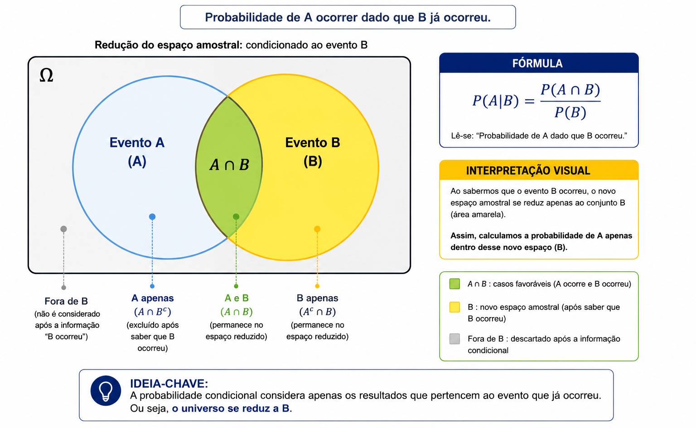

A probabilidade condicional calcula a chance de um evento $A$ acontecer sabendo previamente que outro evento $B$ já ocorreu. A ocorrência do evento $B$ reduz o espaço amostral original para apenas os elementos de $B$.
A fórmula geral é dada por $P(A|B) = \frac{P(A \cap B)}{P(B)}$ (com $P(B) > 0$). Quando dois eventos são independentes, a ocorrência de $B$ não altera a probabilidade de $A$, resultando em $P(A|B) = P(A)$ e $P(A \cap B) = P(A) \cdot P(B)$.
📖 Probabilidade Condicional
1. Redução do Espaço Amostral
Quando sabemos que um evento $B$ já aconteceu, o universo de possibilidades diminui. O novo espaço amostral passa a ser o próprio evento $B$, e os casos favoráveis passam a ser apenas os elementos comuns a $A$ e $B$ ($A \cap B$).
Notação: $P(A|B)$ lê-se "probabilidade de $A$ dado $B$".
Em conjuntos discretos: $P(A|B) = \frac{n(A \cap B)}{n(B)}$, onde $n(B)$ é o número de elementos do evento condicionante $B$.

Figura 1:Probabilidade Condicional.
2. Definição Formal e Fórmula
Em termos globais de probabilidade, a probabilidade condicional de $A$ dado $B$ é definida por:
Isolando $P(A \cap B)$ na definição de probabilidade condicional, obtemos a regra do produto para a ocorrência simultânea de dois eventos:
$$P(A \cap B) = P(B) \cdot P(A|B) \quad \text{ou} \quad P(A \cap B) = P(A) \cdot P(B|A)$$
Esse teorema é fundamental em problemas de retiradas sucessivas sem reposição, onde a probabilidade do segundo evento depende do resultado do primeiro.
4. Eventos Independentes
Dois eventos $A$ e $B$ são ditos independentes quando a ocorrência do evento $B$ não afeta a probabilidade do evento $A$ ocorrer.
Condição de independência: $P(A|B) = P(A)$
Regra da multiplicação para eventos independentes:
$$P(A \cap B) = P(A) \cdot P(B)$$
Exemplo típico: Retiradas sucessivas com reposição ou lançamentos sucessivos de moedas e dados.
💡 Matemática em Ação
🧪 Exames Médicos e Falsos Positivos
A probabilidade condicional é usada na medicina para calcular a eficácia de testes diagnósticos. A chance de um paciente realmente ter uma doença sabendo que o teste deu positivo depende da sensibilidade do exame e da prevalência da doença na população.
📊 Inteligência Artificial e Filtros de Spam
Filtros de e-mail utilizam o Teorema de Bayes (derivado da probabilidade condicional) para calcular a probabilidade de uma mensagem ser spam dada a presença de certas palavras-chave no texto.
✅ 5 Questões Resolvidas (R 1 a 5)
R 1: Condicional no Lançamento de um Dado
Enunciado: Um dado honesto de 6 faces é lançado. Sabendo que o resultado foi um número par, qual é a probabilidade de ter saído um número maior que 3?
Enunciado: Em uma sala com 40 alunos, 25 gostam de Matemática, 15 gostam de Física e 10 gostam de ambas as disciplinas. Escolhendo ao acaso um aluno que gosta de Matemática, qual a probabilidade de ele também gostar de Física?
Resolução:
1. Evento condicionante $M$ (gosta de Matemática): $n(M) = 25$.
2. Evento interseção $F \cap M$ (gosta de Física E Matemática): $n(F \cap M) = 10$.
3. Aplicando a redução do espaço amostral:
$P(F|M) = \frac{n(F \cap M)}{n(M)} = \frac{10}{25} = \mathbf{\frac{2}{5}} = 0,40 = 40\%$.
R 3: Retiradas Sem Reposição em uma Urna
Enunciado: Uma urna contém 6 bolas pretas e 4 bolas brancas. Duas bolas são retiradas sucessivamente e sem reposição. Qual a probabilidade de a primeira ser preta e a segunda ser branca?
Resolução:
Pelo Teorema da Multiplicação ($P(P_1 \cap B_2) = P(P_1) \cdot P(B_2|P_1)$):
1. Probabilidade da 1ª ser preta: $P(P_1) = \frac{6}{10}$.
2. Probabilidade da 2ª ser branca, dado que a 1ª foi preta (sobraram 9 bolas no total, sendo 4 brancas): $P(B_2|P_1) = \frac{4}{9}$.
3. Multiplicando as probabilidades: $P(P_1 \cap B_2) = \frac{6}{10} \cdot \frac{4}{9} = \frac{24}{90} = \mathbf{\frac{4}{15}} \approx 26,67\%$.
R 4: Probabilidade Condicional a partir de Tabela de Frequência
Enunciado: A tabela abaixo resume o perfil de 100 funcionários de uma empresa:
• Homens: 30 aprovados, 10 reprovados no teste de inglês.
• Mulheres: 45 aprovadas, 15 reprovadas no teste de inglês.
Selecionando-se um funcionário ao acaso e sabendo que ele foi aprovado, qual a probabilidade de ser uma mulher?
Enunciado: Sejam $A$ e $B$ dois eventos tais que $P(A) = 0,5$, $P(B) = 0,4$ e $P(A \cap B) = 0,2$. Verifique se $A$ e $B$ são eventos independentes.
Resolução:
1. Para que dois eventos sejam independentes, deve-se verificar se $P(A \cap B) = P(A) \cdot P(B)$.
2. Calculando o produto: $P(A) \cdot P(B) = 0,5 \cdot 0,4 = 0,20$.
3. Como $P(A \cap B) = 0,2$ e $P(A) \cdot P(B) = 0,2$, a igualdade é verdadeira. Conclusão: Os eventos $A$ e $B$ são independentes
✍️ 5 Questões Propostas (P 6 a 10)
P 6: Lançamento de Dois Dados
Enunciado: Lançam-se dois dados honestos simultaneamente. Sabendo que a soma dos pontos obtidos foi igual a 8, qual a probabilidade de ter saído pelo menos um número 4?
Resolução:
1. Espaço amostral reduzido (soma 8): $B = \{(2,6), (3,5), (4,4), (5,3), (6,2)\} \implies n(B) = 5$.
2. Casos favoráveis (contém o número 4): apenas o par $(4,4) \implies n(A \cap B) = 1$.
3. Probabilidade: $P = \mathbf{\frac{1}{5}} = 0,20 = 20\%$.
P 7: Retirada de Baralho Padrão
Enunciado: Uma carta é retirada ao acaso de um baralho comum de 52 cartas. Sabendo que a carta sorteada é uma figura (Valete, Dama ou Rei), qual a probabilidade de ela ser de Espadas?
Resolução:
1. Número de figuras no baralho (evento $F$): $3 \times 4 = 12$ cartas ($n(F) = 12$).
2. Número de figuras de espadas ($E \cap F$): $3$ cartas (Valete, Dama e Rei de espadas).
3. Probabilidade condicional: $P(E|F) = \frac{3}{12} = \mathbf{\frac{1}{4}} = 0,25 = 25\%$.
P 8: Sorteio em uma Família
Enunciado: Uma família possui duas crianças. Sabendo que pelo menos uma das crianças é um menino, qual é a probabilidade de ambas serem meninos? (Assuma chances iguais para nascimento de meninos e meninas).
Enunciado: Em uma caixa há 5 fichas numeradas de 1 a 5. Duas fichas são retiradas uma a uma, sem reposição. Qual a probabilidade de a segunda ficha ter um número ímpar, sabendo que a primeira foi um número par?
Resolução:
1. Fichas iniciais: Pares = $\{2, 4\}$ (2 fichas); Ímpares = $\{1, 3, 5\}$ (3 fichas). Total = 5 fichas.
2. Dado que a 1ª ficha foi par, restam na caixa 4 fichas no total, das quais 3 continuam sendo ímpares.
3. Probabilidade condicional: $P = \mathbf{\frac{3}{4}} = 0,75 = 75\%$.
P 10: Independência no Lançamento de Moeda e Dado
Enunciado: Lança-se uma moeda e um dado honesto. Qual a probabilidade de obter "Cara" na moeda E um "número maior que 4" no dado?
Resolução:
Como os lançamentos da moeda e do dado são eventos independentes, aplica-se $P(A \cap B) = P(A) \cdot P(B)$:
1. Probabilidade de obter Cara: $P(A) = \frac{1}{2}$.
2. Probabilidade de obter número maior que 4 (5 ou 6): $P(B) = \frac{2}{6} = \frac{1}{3}$.
3. Probabilidade conjunta: $P(A \cap B) = \frac{1}{2} \cdot \frac{1}{3} = \mathbf{\frac{1}{6}} \approx 16,67\%$.
🎓 TESTES (T 11 a 15)
🚧 EM BREVE!
Questões de vestibulares serão disponibilizadas em breve.